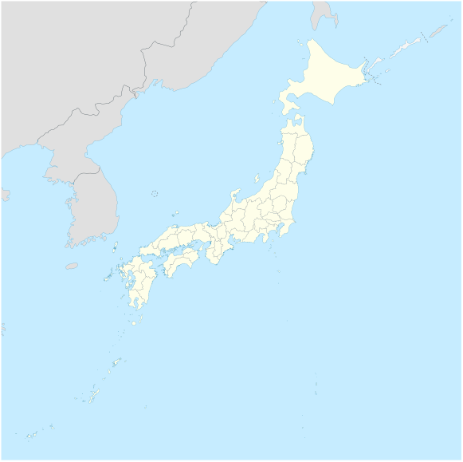

Токио
Мегаполис, где традиции соседствуют с современной культурой: Асакуса, Сибуя, Синдзюку и другие районы.
RUSSIAN GUIDE IN JAPAN
Лена помогает русскоязычным гостям открыть Японию в удобном и спокойном темпе: городскую культуру, историю, природу, онсэны и повседневную жизнь. Маршрут можно адаптировать под первый визит, семейную поездку или путешествие по нескольким городам.
Обсудить поездку
Карта: Wikimedia Commons

Главная цель Лены - сделать путешествие по Японии понятным, комфортным и свободным от языковых трудностей. Она помогает не только на экскурсиях, но и с культурным контекстом, выбором фотолокаций, передвижением, покупками, ресторанами и повседневными вопросами во время поездки.
Выберите город или регион, чтобы посмотреть отдельную галерею.
Изображения: Wikimedia Commons, источники указаны на страницах галерей.
Помощь после прилета: транспорт, заселение в отель и первые вопросы на русском языке.
Маршрут под ваши интересы: городские прогулки, история, природа, гастрономия или поездки за город.
Сопровождение в магазинах, помощь с вопросами, рекомендациями и общением на месте.
Горячие источники, правила посещения, живописные места и расслабленный темп поездки.
Маршруты с учетом времени года: цветение, осенние листья, местные праздники и события.
Чайная церемония, вагаси, каллиграфия, ремесла и другие впечатления за пределами обычной экскурсии.
Стоимость зависит от сезона, количества гостей, маршрута и объема перевода. Точную смету можно обсудить заранее.
Напишите даты, количество гостей и желаемые города или темы поездки.
Email: lena.guide.jp@example.com